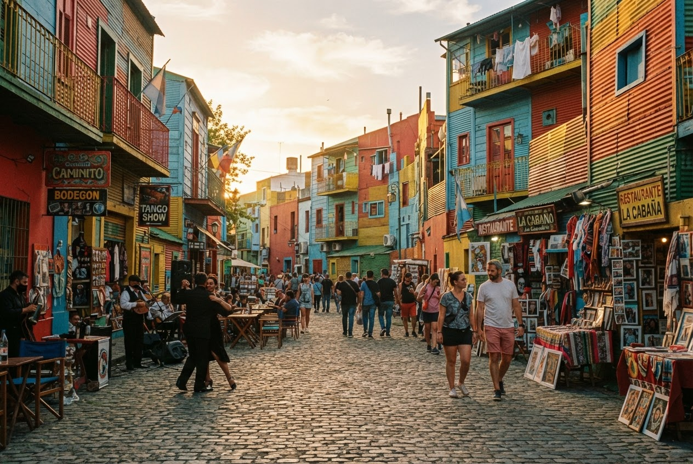

Cuándo ir
Preferí las horas de luz para las caminatas. Antes de salir, consultá los horarios oficiales de cada espacio y la programación del día.
FÚTBOL · PASIÓN, BARRIO Y TRIBUNA
De potreros míticos y clubes sociales a estadios de cemento que laten. Un recorrido cultural y urbano por el idioma universal de los porteños.
Empezar a recorrer
Antes de salir
Este recorrido reúne espacios sagrados de la liturgia futbolera porteña. Prestá atención a las veredas fileteadas, los adoquines antiguos de La Boca y el sonido distante de los entrenamientos de barrio.
Parada destacada · 45 min estimados
El templo del fútbol mundial. Su estructura vertical late literalmente cuando la hinchada canta.
Abrir información de La BomboneraUbicación: La Boca · Estadio Alberto J. Armando.
Experiencia: Recorrido cultural, observación del entorno y visita al espacio cuando esté habilitado.
Acceso y horarios: Para ingresar, consultá la programación, los horarios y las entradas del establecimiento antes de salir. La planificación de Porteña no incluye entradas ni consumos.
Ver ubicación y recorrido →Parada destacada · 45 min estimados
Un túnel de tiempo por los colores azul y oro, con reliquias históricas y camisetas invaluables.
Abrir información de Museo de la Pasión BoquenseUbicación: La Boca · Museo de la Pasión Boquense.
Experiencia: Recorrido cultural, observación del entorno y visita al espacio cuando esté habilitado.
Acceso y horarios: Para ingresar, consultá la programación, los horarios y las entradas del establecimiento antes de salir. La planificación de Porteña no incluye entradas ni consumos.
Ver ubicación y recorrido →Parada destacada · 45 min estimados
Donde el fútbol se ensaya descalzo en canchas de baldosa, bajo la sombra protectora de la autopista.
Abrir información de El potrero de BarracasUbicación: Barracas · ubicación exacta pendiente de revisión.
Experiencia: Recorrido cultural, observación del entorno y visita al espacio cuando esté habilitado.
Acceso y horarios: Para ingresar, consultá la programación, los horarios y las entradas del establecimiento antes de salir. La planificación de Porteña no incluye entradas ni consumos.
Esta parada conserva el contenido del prototipo. Su ubicación se completará después del review.
Parada destacada · 45 min estimados
Un bodegón de barrio con mesas gastadas de madera donde todavía se discuten jugadas de 1978.
Abrir información de Café de los hinchasUbicación: Establecimiento y dirección pendientes de revisión.
Experiencia: Recorrido cultural, observación del entorno y visita al espacio cuando esté habilitado.
Acceso y horarios: Para ingresar, consultá la programación, los horarios y las entradas del establecimiento antes de salir. La planificación de Porteña no incluye entradas ni consumos.
Esta parada conserva el contenido del prototipo. Su ubicación se completará después del review.
Parada destacada · 45 min estimados
La Joya de Parque Patricios. Un monumento de cemento y art decó monumental único en el continente.
Abrir información de Estadio Tomás A. DucóUbicación: Parque Patricios · Estadio de Huracán.
Experiencia: Recorrido cultural, observación del entorno y visita al espacio cuando esté habilitado.
Acceso y horarios: Para ingresar, consultá la programación, los horarios y las entradas del establecimiento antes de salir. La planificación de Porteña no incluye entradas ni consumos.
Ver ubicación y recorrido →Preferí las horas de luz para las caminatas. Antes de salir, consultá los horarios oficiales de cada espacio y la programación del día.
Subte, colectivo y caminata. Combiná los tramos según tu ritmo y llevá tu tarjeta SUBE para los traslados.
Calzado cómodo, botella de agua y espacio para la sorpresa. Respetá las obras, los vecinos y los espacios que visites.